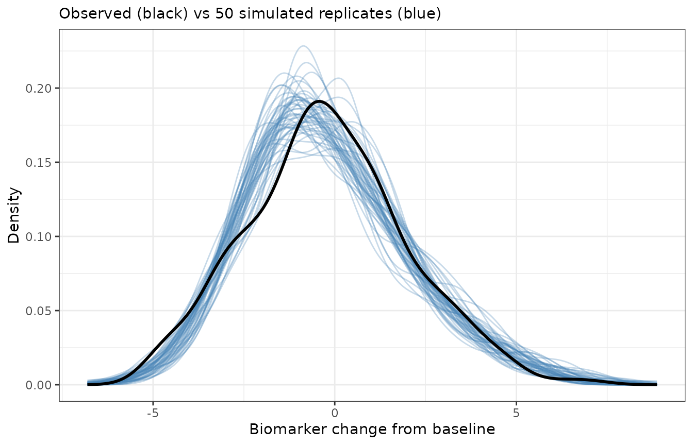
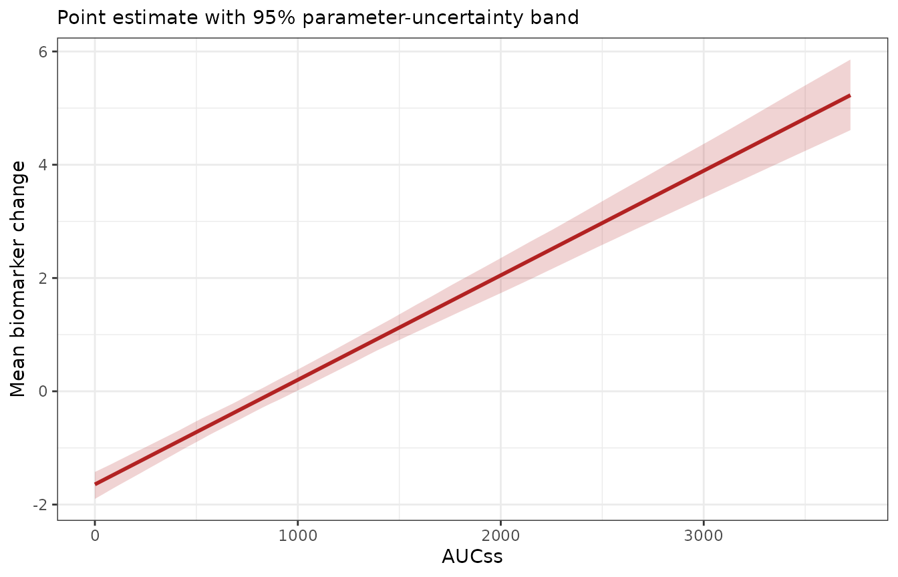

Once a model has been fitted, it’s often useful to generate new data from it: for predictive checks, for simulation-based intervals, or as the input to some downstream analysis. The package offers two tools for this, operating at different levels:
-
simulate()is the high-level method. It generates complete replicate datasets from a fitted model, automatically propagating both the uncertainty in the parameter estimates and the observation-level noise. -
erglm_fun()is the low-level building block. It extracts the deterministic prediction function from a fitted model, letting you evaluate it at any parameter values and any data you choose – the raw material for building custom simulations by hand.
Both rely on the mvtnorm package for drawing
parameter values, so it needs to be installed. This article works
through both tools using a gaussian model, then shows that they
generalise unchanged to the other glm() families erglm
supports.
mod <- erglm_model(biomarker_change ~ aucss, erglm_data, family = gaussian())The simulate() method
Calling simulate() generates one or more replicate
datasets. The number of replicates is set by nsim, and a
seed can be supplied for reproducibility:
sim1 <- simulate(mod, nsim = 1, seed = 1)
sim1
#> dat_id sim_id mu val coef_(Intercept) coef_aucss aucss
#> 1 1 1 -0.43692 -1.686464 -1.716 0.0019 673.1
#> 2 2 1 3.61559 6.001067 -1.716 0.0019 2806.1
#> 3 3 1 -1.71572 -1.222992 -1.716 0.0019 0.0
#> 4 4 1 0.50534 -0.721537 -1.716 0.0019 1169.0
#> 5 5 1 -0.99891 -0.270042 -1.716 0.0019 377.3
#> 6 6 1 -1.09430 0.009739 -1.716 0.0019 327.1
#> 7 7 1 -1.71572 -0.854731 -1.716 0.0019 0.0
#> 8 8 1 0.57866 0.122004 -1.716 0.0019 1207.6
#> 9 9 1 -1.71572 0.544902 -1.716 0.0019 0.0
#> 10 10 1 -1.23392 -0.650978 -1.716 0.0019 253.6
#> 11 11 1 4.25999 3.331026 -1.716 0.0019 3145.3
#> 12 12 1 -0.94684 -4.258556 -1.716 0.0019 404.7
#> 13 13 1 0.94725 2.629399 -1.716 0.0019 1401.6
#> 14 14 1 -1.71572 -1.782908 -1.716 0.0019 0.0
#> 15 15 1 0.87262 0.848415 -1.716 0.0019 1362.4
#> 16 16 1 -0.84474 0.566613 -1.716 0.0019 458.4
#> 17 17 1 -0.60811 0.619886 -1.716 0.0019 583.0
#> 18 18 1 -1.71572 -0.827635 -1.716 0.0019 0.0
#> 19 19 1 -0.98264 0.391542 -1.716 0.0019 385.9
#> 20 20 1 -1.71572 -0.546161 -1.716 0.0019 0.0
#> 21 21 1 -1.71572 -1.604217 -1.716 0.0019 0.0
#> 22 22 1 1.36208 -1.612666 -1.716 0.0019 1620.0
#> 23 23 1 -1.71572 -0.788870 -1.716 0.0019 0.0
#> 24 24 1 -1.71572 -1.799648 -1.716 0.0019 0.0
#> 25 25 1 0.43305 0.200081 -1.716 0.0019 1131.0
#> 26 26 1 0.61457 -1.584697 -1.716 0.0019 1226.5
#> 27 27 1 -1.71572 -2.430711 -1.716 0.0019 0.0
#> 28 28 1 -1.71572 -1.090754 -1.716 0.0019 0.0
#> 29 29 1 1.06080 3.092480 -1.716 0.0019 1461.4
#> 30 30 1 4.46981 4.316108 -1.716 0.0019 3255.7
#> 31 31 1 -0.13271 0.446990 -1.716 0.0019 833.2
#> 32 32 1 -0.61506 -0.695519 -1.716 0.0019 579.3
#> 33 33 1 -0.90208 -2.961246 -1.716 0.0019 428.3
#> 34 34 1 0.30002 -0.320531 -1.716 0.0019 1061.0
#> 35 35 1 0.39744 -0.192160 -1.716 0.0019 1112.3
#> 36 36 1 -1.71572 -1.804410 -1.716 0.0019 0.0
#> 37 37 1 -1.19450 0.450407 -1.716 0.0019 274.3
#> 38 38 1 0.87713 2.018334 -1.716 0.0019 1364.7
#> 39 39 1 -0.98257 -1.228591 -1.716 0.0019 385.9
#> 40 40 1 1.04977 0.670909 -1.716 0.0019 1455.6
#> 41 41 1 -1.71572 -0.673523 -1.716 0.0019 0.0
#> 42 42 1 2.75954 3.591934 -1.716 0.0019 2355.5
#> 43 43 1 0.41719 -0.612732 -1.716 0.0019 1122.6
#> 44 44 1 -0.31662 -1.374559 -1.716 0.0019 736.4
#> 45 45 1 -0.60603 -0.060856 -1.716 0.0019 584.1
#> 46 46 1 -0.06296 1.086250 -1.716 0.0019 869.9
#> 47 47 1 0.78669 0.618695 -1.716 0.0019 1317.1
#> 48 48 1 -0.98760 0.329947 -1.716 0.0019 383.2
#> 49 49 1 -1.71572 -1.120415 -1.716 0.0019 0.0
#> 50 50 1 3.37963 2.464441 -1.716 0.0019 2681.9
#> 51 51 1 1.87096 2.381053 -1.716 0.0019 1887.8
#> 52 52 1 -1.71572 -3.404493 -1.716 0.0019 0.0
#> 53 53 1 -1.71572 0.427134 -1.716 0.0019 0.0
#> 54 54 1 -0.20438 2.756977 -1.716 0.0019 795.5
#> 55 55 1 -1.71572 -2.264836 -1.716 0.0019 0.0
#> 56 56 1 5.35755 3.796223 -1.716 0.0019 3723.0
#> 57 57 1 -0.84483 0.007091 -1.716 0.0019 458.4
#> 58 58 1 4.08286 3.880910 -1.716 0.0019 3052.1
#> 59 59 1 -0.80203 2.789197 -1.716 0.0019 480.9
#> 60 60 1 -1.71572 -1.774394 -1.716 0.0019 0.0
#> 61 61 1 2.40862 3.440011 -1.716 0.0019 2170.8
#> 62 62 1 -0.21554 -0.173664 -1.716 0.0019 789.6
#> 63 63 1 5.20538 4.093942 -1.716 0.0019 3642.9
#> 64 64 1 -1.04282 -0.760509 -1.716 0.0019 354.2
#> 65 65 1 -1.71572 -4.414735 -1.716 0.0019 0.0
#> 66 66 1 -1.71572 0.475779 -1.716 0.0019 0.0
#> 67 67 1 -0.04892 0.180249 -1.716 0.0019 877.3
#> 68 68 1 -0.71641 2.532372 -1.716 0.0019 526.0
#> 69 69 1 -1.71572 -1.004671 -1.716 0.0019 0.0
#> 70 70 1 0.26779 -0.793815 -1.716 0.0019 1044.0
#> 71 71 1 -1.71572 -0.802476 -1.716 0.0019 0.0
#> 72 72 1 1.64209 0.245306 -1.716 0.0019 1767.4
#> 73 73 1 0.26836 -1.606245 -1.716 0.0019 1044.3
#> 74 74 1 2.87530 3.311112 -1.716 0.0019 2416.5
#> 75 75 1 -1.28590 -1.948769 -1.716 0.0019 226.2
#> 76 76 1 2.11344 2.115089 -1.716 0.0019 2015.5
#> 77 77 1 -1.71572 -1.604552 -1.716 0.0019 0.0
#> 78 78 1 -1.71572 -2.597248 -1.716 0.0019 0.0
#> 79 79 1 0.13518 -0.715166 -1.716 0.0019 974.2
#> 80 80 1 1.72072 1.518578 -1.716 0.0019 1808.8
#> 81 81 1 -0.25479 1.506846 -1.716 0.0019 769.0
#> 82 82 1 -0.58056 -2.858805 -1.716 0.0019 597.5
#> 83 83 1 1.79844 2.686587 -1.716 0.0019 1849.7
#> 84 84 1 -1.71572 -1.217845 -1.716 0.0019 0.0
#> 85 85 1 -1.71572 -0.126027 -1.716 0.0019 0.0
#> 86 86 1 -1.71572 -2.170574 -1.716 0.0019 0.0
#> 87 87 1 -1.71572 -1.162415 -1.716 0.0019 0.0
#> 88 88 1 0.59819 0.997595 -1.716 0.0019 1217.9
#> 89 89 1 -1.71572 -2.526966 -1.716 0.0019 0.0
#> 90 90 1 -0.38113 1.425032 -1.716 0.0019 702.5
#> 91 91 1 0.75802 2.493208 -1.716 0.0019 1302.0
#> 92 92 1 -0.86789 0.179162 -1.716 0.0019 446.2
#> 93 93 1 -1.22579 1.147061 -1.716 0.0019 257.9
#> 94 94 1 2.55150 3.386629 -1.716 0.0019 2246.0
#> 95 95 1 -1.71572 -3.624650 -1.716 0.0019 0.0
#> 96 96 1 -1.15578 -2.013002 -1.716 0.0019 294.7
#> 97 97 1 -1.71572 -3.546923 -1.716 0.0019 0.0
#> 98 98 1 -1.71572 -2.423609 -1.716 0.0019 0.0
#> 99 99 1 -1.71572 -2.643373 -1.716 0.0019 0.0
#> 100 100 1 -0.87744 -0.814467 -1.716 0.0019 441.2
#> 101 101 1 -0.79804 -2.160173 -1.716 0.0019 483.0
#> 102 102 1 1.71909 1.955395 -1.716 0.0019 1807.9
#> 103 103 1 0.95986 -0.018962 -1.716 0.0019 1408.3
#> 104 104 1 -0.20837 2.434312 -1.716 0.0019 793.4
#> 105 105 1 -0.15989 0.911833 -1.716 0.0019 818.9
#> 106 106 1 -1.40629 -0.045278 -1.716 0.0019 162.9
#> 107 107 1 4.38938 4.963870 -1.716 0.0019 3213.4
#> 108 108 1 -1.71572 0.799700 -1.716 0.0019 0.0
#> 109 109 1 -0.02376 -0.974395 -1.716 0.0019 890.6
#> 110 110 1 3.84006 3.149746 -1.716 0.0019 2924.3
#> 111 111 1 -1.71572 0.426025 -1.716 0.0019 0.0
#> 112 112 1 3.10900 2.135995 -1.716 0.0019 2539.5
#> 113 113 1 -0.32747 -0.637572 -1.716 0.0019 730.7
#> 114 114 1 -1.21493 -1.802309 -1.716 0.0019 263.6
#> 115 115 1 0.99300 0.514507 -1.716 0.0019 1425.7
#> 116 116 1 -1.71572 -2.133085 -1.716 0.0019 0.0
#> 117 117 1 -1.71572 -0.976740 -1.716 0.0019 0.0
#> 118 118 1 -0.83845 -1.103614 -1.716 0.0019 461.7
#> 119 119 1 2.63872 1.882141 -1.716 0.0019 2291.9
#> 120 120 1 -1.01834 0.989953 -1.716 0.0019 367.1
#> 121 121 1 -1.07128 -1.392147 -1.716 0.0019 339.2
#> 122 122 1 -1.71572 -1.984214 -1.716 0.0019 0.0
#> 123 123 1 2.16621 2.016392 -1.716 0.0019 2043.2
#> 124 124 1 -1.00344 0.062230 -1.716 0.0019 374.9
#> 125 125 1 -1.71572 -1.825720 -1.716 0.0019 0.0
#> 126 126 1 -1.71572 -1.771993 -1.716 0.0019 0.0
#> 127 127 1 -0.82051 -1.839825 -1.716 0.0019 471.2
#> 128 128 1 3.89029 3.405402 -1.716 0.0019 2950.7
#> 129 129 1 0.49366 0.583623 -1.716 0.0019 1162.9
#> 130 130 1 -0.70728 -1.587877 -1.716 0.0019 530.8
#> 131 131 1 0.19811 0.992878 -1.716 0.0019 1007.3
#> 132 132 1 1.28800 -0.982509 -1.716 0.0019 1581.0
#> 133 133 1 0.48305 0.941459 -1.716 0.0019 1157.3
#> 134 134 1 -1.28895 -3.586458 -1.716 0.0019 224.6
#> 135 135 1 -1.71572 -2.165777 -1.716 0.0019 0.0
#> 136 136 1 -1.24708 -2.037036 -1.716 0.0019 246.7
#> 137 137 1 -0.48914 -1.464242 -1.716 0.0019 645.6
#> 138 138 1 -1.71572 -1.800797 -1.716 0.0019 0.0
#> 139 139 1 0.37485 -2.487761 -1.716 0.0019 1100.4
#> 140 140 1 -1.71572 0.043669 -1.716 0.0019 0.0
#> 141 141 1 -0.52147 -3.011160 -1.716 0.0019 628.6
#> 142 142 1 -1.71572 -2.408850 -1.716 0.0019 0.0
#> 143 143 1 -1.16630 -2.834974 -1.716 0.0019 289.2
#> 144 144 1 -1.71572 -2.838443 -1.716 0.0019 0.0
#> 145 145 1 0.58000 3.701013 -1.716 0.0019 1208.3
#> 146 146 1 3.55716 3.583173 -1.716 0.0019 2775.4
#> 147 147 1 3.72839 1.804940 -1.716 0.0019 2865.5
#> 148 148 1 1.47158 -0.981672 -1.716 0.0019 1677.6
#> 149 149 1 -1.71572 -1.042536 -1.716 0.0019 0.0
#> 150 150 1 2.18250 2.154747 -1.716 0.0019 2051.8
#> 151 151 1 -1.71572 -2.191336 -1.716 0.0019 0.0
#> 152 152 1 -0.63640 -2.026106 -1.716 0.0019 568.1
#> 153 153 1 -1.71572 -3.939968 -1.716 0.0019 0.0
#> 154 154 1 0.30579 -1.301987 -1.716 0.0019 1064.0
#> 155 155 1 0.06093 1.556309 -1.716 0.0019 935.1
#> 156 156 1 -0.02899 -0.957990 -1.716 0.0019 887.8
#> 157 157 1 -0.55839 -2.628574 -1.716 0.0019 609.2
#> 158 158 1 3.12460 5.919812 -1.716 0.0019 2547.7
#> 159 159 1 -0.65023 -0.014560 -1.716 0.0019 560.8
#> 160 160 1 -1.06714 -1.423994 -1.716 0.0019 341.4
#> 161 161 1 -1.71572 -0.132930 -1.716 0.0019 0.0
#> 162 162 1 -1.71572 -0.390218 -1.716 0.0019 0.0
#> 163 163 1 -0.43436 -1.360332 -1.716 0.0019 674.4
#> 164 164 1 1.93278 5.231638 -1.716 0.0019 1920.4
#> 165 165 1 -1.35151 -1.732863 -1.716 0.0019 191.7
#> 166 166 1 -0.98892 -3.119019 -1.716 0.0019 382.5
#> 167 167 1 -1.71572 -1.931643 -1.716 0.0019 0.0
#> 168 168 1 -1.07082 -0.760481 -1.716 0.0019 339.4
#> 169 169 1 -1.71572 1.735484 -1.716 0.0019 0.0
#> 170 170 1 -1.71572 -1.557507 -1.716 0.0019 0.0
#> 171 171 1 1.17225 1.855615 -1.716 0.0019 1520.1
#> 172 172 1 -1.07158 -1.186946 -1.716 0.0019 339.0
#> 173 173 1 -0.01827 -0.517711 -1.716 0.0019 893.4
#> 174 174 1 -1.31190 -1.363830 -1.716 0.0019 212.5
#> 175 175 1 -1.71572 -0.537932 -1.716 0.0019 0.0
#> 176 176 1 0.87880 3.981984 -1.716 0.0019 1365.6
#> 177 177 1 -0.06860 1.467695 -1.716 0.0019 867.0
#> 178 178 1 2.94839 4.754617 -1.716 0.0019 2454.9
#> 179 179 1 -0.77056 -2.611803 -1.716 0.0019 497.5
#> 180 180 1 1.37246 2.843712 -1.716 0.0019 1625.5
#> 181 181 1 3.04287 3.371732 -1.716 0.0019 2504.7
#> 182 182 1 -0.16037 -2.354404 -1.716 0.0019 818.6
#> 183 183 1 1.07464 1.853743 -1.716 0.0019 1468.7
#> 184 184 1 -1.71572 -1.953108 -1.716 0.0019 0.0
#> 185 185 1 -0.75889 1.431163 -1.716 0.0019 503.6
#> 186 186 1 -1.71572 -2.861266 -1.716 0.0019 0.0
#> 187 187 1 -1.71572 -2.359028 -1.716 0.0019 0.0
#> 188 188 1 -1.71572 -3.100561 -1.716 0.0019 0.0
#> 189 189 1 2.61630 2.351472 -1.716 0.0019 2280.1
#> 190 190 1 -0.06700 0.534141 -1.716 0.0019 867.8
#> 191 191 1 0.36362 -0.730585 -1.716 0.0019 1094.5
#> 192 192 1 -0.17663 1.065059 -1.716 0.0019 810.1
#> 193 193 1 0.15356 -1.652926 -1.716 0.0019 983.9
#> 194 194 1 4.46913 2.902039 -1.716 0.0019 3255.4
#> 195 195 1 1.02689 3.181907 -1.716 0.0019 1443.6
#> 196 196 1 -1.71572 -3.234749 -1.716 0.0019 0.0
#> 197 197 1 -0.68804 -0.072001 -1.716 0.0019 540.9
#> 198 198 1 -1.71572 -2.285553 -1.716 0.0019 0.0
#> 199 199 1 -0.08876 0.523434 -1.716 0.0019 856.3
#> 200 200 1 -0.19728 2.328149 -1.716 0.0019 799.2
#> 201 201 1 1.61595 3.988429 -1.716 0.0019 1753.6
#> 202 202 1 3.23145 2.736632 -1.716 0.0019 2603.9
#> 203 203 1 3.18038 -0.236814 -1.716 0.0019 2577.0
#> 204 204 1 -0.96760 2.767241 -1.716 0.0019 393.8
#> 205 205 1 2.20800 3.205486 -1.716 0.0019 2065.2
#> 206 206 1 -1.71572 -0.906251 -1.716 0.0019 0.0
#> 207 207 1 -1.71572 -1.735754 -1.716 0.0019 0.0
#> 208 208 1 1.56045 2.323233 -1.716 0.0019 1724.4
#> 209 209 1 -1.71572 -1.961514 -1.716 0.0019 0.0
#> 210 210 1 -1.71572 -1.086637 -1.716 0.0019 0.0
#> 211 211 1 1.21423 0.615727 -1.716 0.0019 1542.2
#> 212 212 1 -0.73360 -2.782518 -1.716 0.0019 516.9
#> 213 213 1 -1.71572 -0.238568 -1.716 0.0019 0.0
#> 214 214 1 -0.33633 1.936200 -1.716 0.0019 726.0
#> 215 215 1 -0.44214 -0.903809 -1.716 0.0019 670.3
#> 216 216 1 -1.71572 -3.589805 -1.716 0.0019 0.0
#> 217 217 1 -1.71572 -0.755351 -1.716 0.0019 0.0
#> 218 218 1 -0.48371 -0.550561 -1.716 0.0019 648.5
#> 219 219 1 0.33989 -2.251852 -1.716 0.0019 1082.0
#> 220 220 1 -1.39040 -1.387211 -1.716 0.0019 171.2
#> 221 221 1 1.89744 0.954931 -1.716 0.0019 1901.8
#> 222 222 1 -1.71572 -2.225579 -1.716 0.0019 0.0
#> 223 223 1 1.78529 0.055822 -1.716 0.0019 1842.7
#> 224 224 1 -1.71572 0.980584 -1.716 0.0019 0.0
#> 225 225 1 -0.56965 -1.064801 -1.716 0.0019 603.2
#> 226 226 1 -1.71572 -4.116497 -1.716 0.0019 0.0
#> 227 227 1 2.01979 2.314661 -1.716 0.0019 1966.2
#> 228 228 1 -1.71572 -1.322181 -1.716 0.0019 0.0
#> 229 229 1 -1.71572 -3.189858 -1.716 0.0019 0.0
#> 230 230 1 0.60013 -3.719775 -1.716 0.0019 1218.9
#> 231 231 1 -1.27077 -2.228503 -1.716 0.0019 234.2
#> 232 232 1 -0.77271 0.080385 -1.716 0.0019 496.3
#> 233 233 1 -1.13893 -1.228236 -1.716 0.0019 303.6
#> 234 234 1 -0.43231 -0.579118 -1.716 0.0019 675.5
#> 235 235 1 -1.71572 -0.877102 -1.716 0.0019 0.0
#> 236 236 1 -1.08574 -2.859890 -1.716 0.0019 331.6
#> 237 237 1 2.60294 4.242987 -1.716 0.0019 2273.1
#> 238 238 1 -1.71572 -1.723708 -1.716 0.0019 0.0
#> 239 239 1 1.68470 2.742368 -1.716 0.0019 1789.8
#> 240 240 1 1.78081 3.327143 -1.716 0.0019 1840.4
#> 241 241 1 -0.58679 -0.252616 -1.716 0.0019 594.2
#> 242 242 1 0.82804 -0.485924 -1.716 0.0019 1338.9
#> 243 243 1 -1.71572 0.023305 -1.716 0.0019 0.0
#> 244 244 1 -1.04547 -4.036383 -1.716 0.0019 352.8
#> 245 245 1 -1.28070 -2.095344 -1.716 0.0019 229.0
#> 246 246 1 -1.71572 -2.098030 -1.716 0.0019 0.0
#> 247 247 1 4.08851 3.840102 -1.716 0.0019 3055.0
#> 248 248 1 0.20741 1.733342 -1.716 0.0019 1012.2
#> 249 249 1 -1.71572 -1.512020 -1.716 0.0019 0.0
#> 250 250 1 -1.71572 -1.106865 -1.716 0.0019 0.0
#> 251 251 1 -0.57359 -0.677749 -1.716 0.0019 601.2
#> 252 252 1 -1.00790 -1.378241 -1.716 0.0019 372.6
#> 253 253 1 -1.09482 -0.054742 -1.716 0.0019 326.8
#> 254 254 1 3.00529 4.719288 -1.716 0.0019 2484.9
#> 255 255 1 -1.31994 -4.913377 -1.716 0.0019 208.3
#> 256 256 1 -1.71572 -0.859279 -1.716 0.0019 0.0
#> 257 257 1 -1.71572 -1.155378 -1.716 0.0019 0.0
#> 258 258 1 -1.71572 -2.351635 -1.716 0.0019 0.0
#> 259 259 1 -1.17069 0.251394 -1.716 0.0019 286.9
#> 260 260 1 -1.71572 -2.297757 -1.716 0.0019 0.0
#> 261 261 1 -0.41262 -0.837787 -1.716 0.0019 685.9
#> 262 262 1 -0.88836 0.393759 -1.716 0.0019 435.5
#> 263 263 1 -0.06682 2.504602 -1.716 0.0019 867.9
#> 264 264 1 -1.71572 -1.311894 -1.716 0.0019 0.0
#> 265 265 1 -1.71572 -2.347023 -1.716 0.0019 0.0
#> 266 266 1 0.27607 -1.502050 -1.716 0.0019 1048.4
#> 267 267 1 -0.86679 -1.361799 -1.716 0.0019 446.8
#> 268 268 1 -0.13258 -1.537938 -1.716 0.0019 833.3
#> 269 269 1 -0.03582 -0.423015 -1.716 0.0019 884.2
#> 270 270 1 -1.71572 -1.125988 -1.716 0.0019 0.0
#> 271 271 1 -1.71572 -2.989529 -1.716 0.0019 0.0
#> 272 272 1 2.39835 6.359739 -1.716 0.0019 2165.4
#> 273 273 1 0.41564 0.648932 -1.716 0.0019 1121.8
#> 274 274 1 -1.71572 -0.025678 -1.716 0.0019 0.0
#> 275 275 1 -0.14320 -3.566211 -1.716 0.0019 827.7
#> 276 276 1 0.68870 1.796747 -1.716 0.0019 1265.6
#> 277 277 1 -1.71572 -3.683944 -1.716 0.0019 0.0
#> 278 278 1 -0.47348 0.901938 -1.716 0.0019 653.8
#> 279 279 1 0.16830 0.763636 -1.716 0.0019 991.6
#> 280 280 1 -0.82226 -1.431654 -1.716 0.0019 470.3
#> 281 281 1 -1.71572 0.264493 -1.716 0.0019 0.0
#> 282 282 1 -1.71572 -2.764293 -1.716 0.0019 0.0
#> 283 283 1 3.01607 2.147858 -1.716 0.0019 2490.6
#> 284 284 1 -1.19522 -2.692154 -1.716 0.0019 274.0
#> 285 285 1 -1.00111 -2.000265 -1.716 0.0019 376.1
#> 286 286 1 -1.71572 -0.302349 -1.716 0.0019 0.0
#> 287 287 1 4.18672 4.835251 -1.716 0.0019 3106.7
#> 288 288 1 -1.71572 -0.212667 -1.716 0.0019 0.0
#> 289 289 1 -1.71572 -2.299075 -1.716 0.0019 0.0
#> 290 290 1 -1.71572 -1.152917 -1.716 0.0019 0.0
#> 291 291 1 -1.71572 -1.350609 -1.716 0.0019 0.0
#> 292 292 1 -1.71572 -3.848449 -1.716 0.0019 0.0
#> 293 293 1 -0.17776 2.481592 -1.716 0.0019 809.5
#> 294 294 1 3.19528 3.396322 -1.716 0.0019 2584.9
#> 295 295 1 -1.71572 -0.570890 -1.716 0.0019 0.0
#> 296 296 1 -1.71572 -0.287468 -1.716 0.0019 0.0
#> 297 297 1 -1.71572 -1.791330 -1.716 0.0019 0.0
#> 298 298 1 -1.71572 -2.173013 -1.716 0.0019 0.0
#> 299 299 1 0.18579 1.522128 -1.716 0.0019 1000.9
#> 300 300 1 -1.27748 -2.843545 -1.716 0.0019 230.7What simulate() actually does
Generating a replicate involves two distinct sources of randomness,
and simulate() accounts for both:
-
Parameter uncertainty. A fresh parameter vector is
drawn from the multivariate normal distribution implied by the estimates
and their covariance matrix, using
coef(mod)andvcov(mod). This represents how uncertain we are about the fitted parameters themselves. -
Observation noise. Given that parameter draw, the
expected response
is evaluated at each observation’s exposure and covariates, and a
response is generated around it. The noise model is family-appropriate:
Bernoulli draws for
binomial, Poisson draws forpoisson, normal draws forgaussian(as here), and gamma draws forGamma.
Because both sources are included, the simulated val
column behaves like a genuine new dataset drawn from the fitted model,
not merely a noiseless prediction.
The output format
The result is a tidy, long-format data frame with
nsimnobs
rows:
names(sim1)
#> [1] "dat_id" "sim_id" "mu" "val"
#> [5] "coef_(Intercept)" "coef_aucss" "aucss"The columns are:
-
dat_id– an index identifying the original observation (row of the data). -
sim_id– which replicate the row belongs to (1tonsim). -
mu– the expected response (response scale) for that observation under the sampled parameters. -
val– the simulated response (the mean plus family-appropriate noise). - the sampled coefficient values, prefixed
coef_*(e.g.coef_`(Intercept)`,coef_aucss) to avoid colliding with predictor columns of the same name, repeated across all rows of a replicate – one parameter draw is used per replicate. - the model’s predictor columns (
aucss), carried along so you can group or plot by exposure and covariates.
Requesting several replicates stacks them, and the sampled coefficients vary from one replicate to the next while staying constant within a replicate:
A predictive check
A natural use of these replicates is a predictive check: if
the model is adequate, the distribution of simulated responses should
resemble the distribution of the observed response. Overlaying the
density of the observed biomarker_change on the densities
of several simulated replicates gives a quick visual check:
ggplot(sims, aes(val, group = sim_id)) +
geom_line(stat = "density", colour = "steelblue", alpha = 0.3) +
geom_line(
aes(biomarker_change),
data = erglm_data,
stat = "density",
inherit.aes = FALSE,
colour = "black",
linewidth = 1
) +
labs(
x = "Biomarker change from baseline",
y = "Density",
subtitle = "Observed (black) vs 50 simulated replicates (blue)"
)
The observed distribution sits comfortably within the spread of the simulated replicates, which is what we’d hope to see from a well-fitting model.
The erglm_fun() tool
Where simulate() bundles parameter sampling and noise
generation together, erglm_fun() exposes the deterministic
core: the prediction function itself. It returns a function of two
arguments, param and data, both of which
default to the values used when the model was fitted:
f <- erglm_fun(mod)
# with no arguments, it reproduces the fitted values
head(f())
#> [1] -0.4013 3.5360 -1.6437 0.5142 -0.9473 -1.0400
head(fitted(mod))
#> 1 2 3 4 5 6
#> -0.4013 3.5360 -1.6437 0.5142 -0.9473 -1.0400Because you control both arguments, you can evaluate the model in
situations the original fit never saw. Supplying param lets
you ask counterfactual “what if the parameters were different?”
questions – for example, setting the intercept to zero:
alt <- coef(mod)
alt["(Intercept)"] <- 0
head(f(param = alt))
#> [1] 1.2424 5.1797 0.0000 2.1579 0.6964 0.6037Supplying data lets you evaluate the curve at exposures
and covariate values of your choosing – for instance, tracing the
exposure-response relationship over a grid of aucss
values:
grid <- tibble(aucss = c(0, 1000, 2000, 3000, 4000))
f(data = grid)
#> [1] -1.6437 0.2022 2.0480 3.8939 5.7397By default erglm_fun() returns predictions on the
response scale (type = "response"); pass
type = "link" for the link scale.
Building a custom simulation
erglm_fun() is the tool to reach for when
simulate() doesn’t do exactly what you need and you want to
assemble the pieces yourself. As an illustration, we can build an
exposure-response curve with a parameter-uncertainty band by combining
erglm_fun() with a manual parameter draw – reproducing, at
a lower level, the parameter-sampling step that simulate()
performs internally.
The recipe is: draw many parameter vectors from the estimated sampling distribution, evaluate the curve over an exposure grid for each draw, and summarise the resulting family of curves pointwise.
set.seed(1)
n_draws <- 500
draws <- mvtnorm::rmvnorm(n_draws, mean = coef(mod), sigma = vcov(mod))
colnames(draws) <- names(coef(mod))
curve_grid <- tibble(aucss = seq(0, max(erglm_data$aucss), length.out = 100))
# evaluate the curve for every parameter draw
curves <- apply(draws, 1, function(p) f(data = curve_grid, param = p))
# summarise pointwise across draws
band <- tibble(
aucss = curve_grid$aucss,
fit = f(data = curve_grid),
lwr = apply(curves, 1, stats::quantile, probs = 0.025),
upr = apply(curves, 1, stats::quantile, probs = 0.975)
)
ggplot(band, aes(aucss)) +
geom_ribbon(aes(ymin = lwr, ymax = upr), fill = "firebrick", alpha = 0.2) +
geom_line(aes(y = fit), colour = "firebrick", linewidth = 1) +
labs(x = "AUCss", y = "Mean biomarker change", subtitle = "Point estimate with 95% parameter-uncertainty band")
This band reflects only parameter uncertainty, because we
summarised the mean curve and never added residual noise – it’s the
analogue of a confidence band. Adding a step that draws
rnorm(..., sd = sqrt(summary(mod)$dispersion)) around each
evaluated mean would turn it into a prediction band that also captures
observation noise, which is precisely the extra ingredient
simulate() supplies for you. This is the essential
trade-off between the two tools: simulate() is convenient
and complete, while erglm_fun() is transparent and fully
under your control.
The same tools across other glm() families
Both tools work unchanged for the other families erglm supports; only
the noise model and scale differ. For a binomial model, mu
is the fitted probability and val is a 0/1 outcome drawn
from
:
mod_b <- erglm_model(ae1 ~ aucss + sex, erglm_data, family = binomial())
sim_b <- simulate(mod_b, nsim = 2, seed = 1)
sort(unique(sim_b$val))
#> [1] 0 1
f_b <- erglm_fun(mod_b)
range(f_b())
#> [1] 0.1234 1.0000For a Poisson model, val is drawn from
and is always a non-negative integer:
mod_p <- erglm_model(ae_count ~ aucss + sex, erglm_data, family = poisson())
sim_p <- simulate(mod_p, nsim = 2, seed = 1)
all(sim_p$val == round(sim_p$val)) && all(sim_p$val >= 0)
#> [1] TRUEEverything else – custom parameter values, custom data grids, and building your own simulations on top of the prediction function – carries over exactly as in the gaussian case.
Visual predictive checks
For a VPC-style plot comparing observed and simulated response rates,
see the companion erplots package’s er_vpc()
mini-grammar. Passing a fitted erglm model directly to
er_vpc_add_simulated()
(er_vpc_add_simulated(model = mod_b)) builds the necessary
simulated replicates internally via erplots::er_simulate()
– which erglm implements on top of the same parameter-sampling/noise
machinery simulate() uses – so no separate erglm-side VPC
helper is needed. See erplots’ Visual
predictive checks article for the full pipeline
(er_vpc() |> er_vpc_add_observed() |> er_vpc_add_simulated(model = ...) |> plot()).
Notes
- Both
simulate()anderglm_fun()’s uncertainty workflows draw parameters with mvtnorm, which must be installed. -
simulate()captures two sources of variability (parameter uncertainty and observation noise); a band built fromerglm_fun()captures only whatever you choose to include, so decide deliberately whether you want a confidence-style band (means only) or a prediction-style band (means plus residual noise). - For a quick analytic interval on the mean, prefer
erglm_predict()orpredict(..., se.fit = TRUE), described in the modelling and methods articles. Reach forsimulate()anderglm_fun()when you need replicate datasets or bespoke simulation logic. - Other
glm()families are not currently supported bysimulate()and will raise an informative error rather than silently falling back to an expectation-only draw.